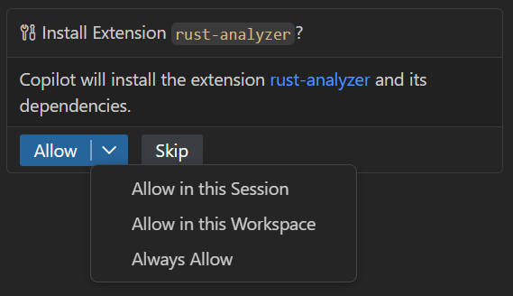
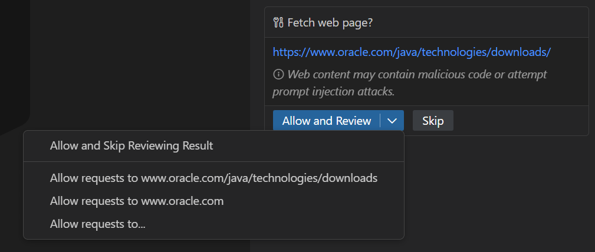

管理审批与权限
Visual Studio Code 中的代理可以运行工具和终端命令来完成任务。为了让您保持控制，VS Code 会在代理执行修改文件、运行命令或访问外部资源的操作之前要求您批准。
本文介绍如何设置代理的权限级别、管理工具与 URL 审批、自动批准终端命令以及对代理命令进行沙箱化。有关在聊天中使用工具的信息，请参阅在聊天中使用工具。有关这些控制措施存在的原因背景，请参阅信任与安全。
VS Code 提供了多种控制机制来管理代理的行为。权限级别是会话的高级控制旋钮，而其他机制则为特定操作提供了细粒度的控制。
| 机制 | 控制内容 | 关键设置 | ||
|---|---|---|---|---|
| --- | --- | --- | ||
| 权限级别 | 会话的整体代理自主权 | setting(chat.permissions.default) | ||
| 工具审批 | 单个工具何时可以运行 | setting(chat.tools.eligibleForAutoApproval) | ||
| URL 审批 | 访问特定 URL 和域 | setting(chat.tools.urls.autoApprove) | ||
| 终端命令审批 | 哪些终端命令自动运行 | setting(chat.tools.terminal.autoApprove) | ||
| 沙箱化 | 代理命令的文件系统和网络访问 | setting(chat.agent.sandbox.enabled) |
权限级别
权限级别是对代理在会话期间拥有多少自主权的高级控制。它们位于本文其余部分描述的更细粒度审批设置（如工具审批、URL 审批和终端命令自动审批）之上。
在聊天输入区域的权限下拉菜单中选择一个权限级别，以选择工具调用和审批的处理方式。
权限级别适用于当前聊天会话，并且可以随时更改。新会话以默认权限级别开始，您可以通过 setting(chat.permissions.default) 设置配置该默认级别。
| 权限级别 | 描述 | ||
|---|---|---|---|
| --- | --- | ||
| 默认审批（默认） | 使用您配置的审批设置。需要审批的工具在运行前会显示确认对话框。有疑问时，代理会提出澄清性问题。 | ||
| 绕过审批 | 自动批准所有工具调用，不显示确认对话框。有疑问时，代理会提出澄清性问题。 | ||
| 自动驾驶 | 自动批准所有工具调用，不显示确认对话框。出现问题时，代理会自动回复澄清性问题。 |
权限级别决定您的细粒度设置是否生效。默认审批遵循您在以下部分中配置的每工具、URL、终端和沙箱设置。绕过审批和自动驾驶会覆盖这些设置，并自动批准所有操作。
[!CAUTION]
绕过审批和自动驾驶会绕过手动审批提示，包括文件编辑、终端命令和外部工具调用等可能具有破坏性的操作。首次启用任一级别时，会显示警告对话框要求您确认。只有在您了解安全隐患的情况下才使用这些级别。有关更多详细信息，请参阅安全注意事项。
自动驾驶的工作方式
当您选择自动驾驶权限级别时，代理的行为与标准代理会话不同：
- 持续迭代：代理持续自主工作，直到确定任务完成。
- 自动批准所有工具：所有工具调用都会自动批准，类似于绕过审批级别。
- 出错自动重试：遇到错误时，代理会自动重试。
- 自动回复问题：通常会阻塞并等待您输入的工具（例如澄清性问题）会自动回复，以免代理因等待回复而停滞。此行为特定于自动驾驶，不适用于绕过审批。
在自动驾驶模式下，代理会持续迭代，直到认为任务完成。您可以启用高级自动驾驶（预览版），这会将此决策委托给另一个模型。在每次自动驾驶轮次之后，一个小型快速模型会评估您的原始请求是否已完成。如果未完成，自动驾驶会继续工作，并将该评估作为下一轮的指导。
要使用高级自动驾驶（预览版）功能，请将 setting(chat.autopilot.advanced.enabled) 设置为 true。
[!NOTE]
自动驾驶消耗 AI 积分的方式与以交互方式使用聊天相同。详细了解基于使用量的计费。
工具审批
某些工具在运行前需要您的批准。这是一项安全措施，因为工具可能会修改文件或更改您的环境。此外，工具返回的数据可能包含试图操纵代理的提示注入。
当工具需要审批时，会出现一个确认对话框，其中包含工具名称及其输入参数。仔细查看此信息，然后选择您的审批范围：单次使用、当前会话、当前工作区或所有将来的调用。

工作区中的某些文件（如 .env 文件或配置文件）可能包含密钥或敏感设置。了解如何要求对敏感文件的编辑进行显式批准。
[!IMPORTANT]
批准前务必仔细检查工具参数，特别是对于修改文件、运行命令或访问外部服务的工具。请参阅在 VS Code 中使用 AI 的安全注意事项。
管理工具审批
从命令面板 (kb(workbench.action.showCommands)) 使用聊天：管理工具审批命令来集中查看和配置工具审批。快速选择列表会按来源（例如 MCP 服务器或扩展）对所有工具进行分组显示。
对于每个工具，您可以配置两种类型的审批：
- 预审批（"无需批准"）：跳过工具运行前的确认对话框。
- 后审批（"无需审核结果"）：跳过审核工具输出后才将其添加到聊天上下文的步骤。这适用于返回外部数据的工具，其中内容可能包含提示注入尝试。
展开某个来源以配置单个工具的审批，或勾选顶层复选框来一次性信任来自特定 MCP 服务器或扩展的所有工具。
防止工具被自动批准
当工具要求审批时，您可以选择批准所有将来的调用，从而此后自动批准该工具。对于敏感工具，您可能希望移除此选项，以便工具始终需要手动批准且不会意外被自动批准。
使用 setting(chat.tools.eligibleForAutoApproval) 设置来控制哪些工具有资格被自动批准。将某个工具设为 false，以始终要求手动批准。
组织也可以使用设备管理策略来强制对特定工具进行手动批准。请参阅企业版文档了解更多信息。
重置工具确认
要清除所有已保存的工具审批，请在命令面板 (kb(workbench.action.showCommands)) 中使用聊天：重置工具确认命令。
要查看并有选择地更改单个工具审批（而不是全部清除），请使用聊天：管理工具审批命令。
URL 审批
当工具尝试访问 URL 时（例如 #web/fetch 工具），VS Code 使用两步审批流程来保护您免受恶意或意外内容的侵害。每个步骤都会在聊天视图中显示确认对话框供您审核。
- 预审批：批准对 URL 的请求
此步骤确认您信任所联系的域，防止敏感数据被发送到不受信任的站点。

您可以一次性批准请求，或自动批准将来对特定 URL 或域的请求。批准请求并不代表批准响应：您仍要在下一步中审核获取到的内容。要同时配置请求和响应审批，请选择允许请求向。
[!NOTE]
预审批会遵循"受信任的域"功能。如果某个域在其中列出，则对该域的请求会自动批准，响应审核步骤会推迟。
- 后审批：批准从 URL 获取的响应内容
此步骤允许您在将获取的内容添加到聊天或传递给其他工具之前进行审核，有助于防止提示注入攻击。
例如，您可能批准从像 GitHub.com 这样知名的站点获取内容的请求。但由于议题描述或评论等内容是用户生成的，它们可能包含操纵代理的有害内容。
您可以一次性批准响应，或自动批准将来来自特定 URL 或域的响应。
[!IMPORTANT]
后审批步骤不与"受信任的域"功能关联，始终需要您审核。这是一项安全措施，用于防止来自您原本信任的域上的不受信任内容带来的问题。
setting(chat.tools.urls.autoApprove) 设置存储您的自动批准 URL 模式。该值既可以是一个布尔值（启用或禁用请求和响应的自动审批），也可以是一个具有 approveRequest 和 approveResponse 属性的对象，用于进行精细控制。您可以使用精确 URL、glob 模式或通配符。
URL 自动审批示例：
{
"chat.tools.urls.autoApprove": {
"https://www.example.com": false,
"https://*.contoso.com/*": true,
"https://example.com/api/*": {
"approveRequest": true,
"approveResponse": false
}
}自动批准终端命令
代理使用单一的终端工具来运行终端命令，但该工具可以运行任何命令。一次性批准终端工具过于宽泛，因此终端命令是按每条命令而不是按工具进行审批的。
默认情况下，VS Code 已自动批准一组安全命令，并阻止风险命令（如 rm 和 del），这些命令始终需要手动批准。使用 setting(chat.tools.terminal.autoApprove) 设置来扩展或覆盖这些默认设置，添加您自己的允许和拒绝列表：
- 将命令设置为
true以自动批准它们 - 将命令设置为
false以始终要求审批 - 通过用
/字符包裹模式来使用正则表达式
例如：
{
// 允许 `mkdir` 命令
"mkdir": true,
// 允许 `git status` 和以 `git show` 开头的命令
"/^git (status|show\\b.*)$/": true,
// 阻止 `del` 命令
"del": false,
// 阻止任何包含 "dangerous" 的命令
"/dangerous/": false
}默认情况下，模式匹配单个子命令。要使一条命令被自动批准，所有子命令都必须匹配一个 true 条目，并且不能匹配任何 false 条目。
对于高级场景，可以使用带有 matchCommandLine 属性的对象语法来匹配整个命令行，而不是单个子命令。
相关设置：
setting(chat.tools.terminal.enableAutoApprove)：完全关闭终端命令自动审批，使每个命令都需要手动批准setting(chat.tools.terminal.blockDetectedFileWrites)（实验性）：设置为outsideWorkspace（默认）时，要求对在工作区外写入文件的终端命令进行审批。在会话级命令审批激活时，写入操作系统临时文件夹（macOS 和 Linux 上的/tmp，Windows 上的%TEMP%）的操作不受此限制。setting(chat.tools.terminal.ignoreDefaultAutoApproveRules)（实验性）：忽略内置的默认允许和拒绝规则，仅应用您在setting(chat.tools.terminal.autoApprove)中定义的规则。[!CAUTION]
自动批准终端命令提供的是_尽力而为_的保护，并假设代理没有恶意行为。启用终端自动批准时，保护自己免受提示注入很重要，因为某些命令可能会漏过。以下是一些检测可能失效的例子：
>
* VS Code 使用 PowerShell 和 bash tree sitter 语法来提取子命令，因此如果这些语法没有检测到模式，它们就不会被识别。
* VS Code 使用 bash 语法，因为没有 zsh 或 fish 语法，因此某些子命令无法被检测到。
* 文件写入的检测目前是基础的，因此可能通过终端写入文件，而这些文件使用文件编辑代理工具则无法写入。
* 通过引号拼接等各种技巧可以绕过自动审批。例如，find -exec通常会被阻止，但find -e"x"ec不会被阻止，尽管它们执行相同的操作。
>
如果存在提示注入的可能性，或者您处于高风险环境中，请考虑启用代理沙箱化或在容器中运行 VS Code。
沙箱化代理命令
[!NOTE]
代理沙箱化目前处于预览阶段，可能会进一步演变。
有关沙箱化如何工作、它防范的内容以及操作系统级别的实现细节的概述，请参阅代理沙箱化。
代理沙箱化限制代理执行的命令的文件系统和网络访问。启用沙箱化后，终端命令会自动批准，无需用户确认，因为它们在受控环境中运行。
您可以选择完全隔离（限制文件系统和网络访问）或仅文件系统隔离（允许不受限制的出站网络流量）。
要配置代理沙箱化，请设置 setting(chat.agent.sandbox.enabled) 设置：
| 值 | 描述 | ||
|---|---|---|---|
| ------- | ------------- | ||
off（默认） | 禁用沙箱化。 | ||
on | 完全沙箱化，包括文件系统和网络隔离。除非显式允许域，否则所有出站网络访问都会被阻止。 | ||
allowNetwork | 仅文件系统隔离的沙箱化。允许出站网络流量，无需配置域，但文件系统限制仍然适用。 |
启用沙箱化后（on 或 allowNetwork）：
当文件系统访问受限制时，以下规则适用于代理命令：
- 命令对工作区文件夹、沙箱运行时临时文件夹以及 VS Code 自动添加的任何逐命令路径（例如
git、node、npm、dotnet所需的路径）具有读取权限。默认情况下拒绝从您的主目录 ($HOME) 读取。 - 命令仅对当前工作目录及其子目录具有写入权限
- 命令运行时无需用户确认提示
当网络访问受限制时，以下规则适用于代理命令：
- 除非显式允许域，否则所有出站网络访问都会被阻止。
- 您可以使用
setting(chat.agent.allowedNetworkDomains)和setting(chat.agent.deniedNetworkDomains)配置域级例外。拒绝的域优先于允许的域。 - 当设置为
allowNetwork时，允许所有出站网络流量，域设置将被忽略。[!IMPORTANT]
如果沙箱化所需的操作系统依赖项未安装，VS Code 会提供安装必要组件的选项。如果您选择不安装它们，则不会启用沙箱化。
配置文件系统访问
使用 setting(chat.agent.sandbox.FileSystem.linux) 或 setting(chat.agent.sandbox.FileSystem.mac) 设置来控制文件系统访问。
您可以为读写访问指定允许规则，以及为读写访问指定拒绝规则。这些规则不支持 glob 模式。denyWrite 和 denyRead 规则优先于 allowWrite 和 allowRead 规则。
工作区文件夹、沙箱运行时临时文件夹和逐命令读取路径是自动允许的，因此您通常只需要使用 allowRead 来授予对工作区外的工具配置或数据的访问权限。
{
"chat.agent.sandbox.FileSystem.mac": {
// 允许对工作目录的写入
"allowWrite": ["."],
// 允许从工作区外的另一个路径读取
"allowRead": ["/Users/me/.config/myapp"],
// 阻止对特定子目录的写入
"denyWrite": ["./secrets/"],
// 阻止从特定路径读取
"denyRead": ["/etc/passwd"]
}
}配置网络访问
您可以通过启用 setting(chat.agent.networkFilter) 设置来限制代理工具（获取工具、集成浏览器）可以访问哪些域。启用后，网络访问由 setting(chat.agent.allowedNetworkDomains) 和 setting(chat.agent.deniedNetworkDomains) 设置控制。当两个列表都为空时，所有域都会被阻止。
当沙箱化也启用时，这些网络规则还会应用于代理执行的终端命令。
拒绝的域始终优先于允许的域。这两个设置都支持通配符，如 *.example.com。
当沙箱化命令被网络限制阻止，并且 setting(chat.agent.sandbox.retryWithAllowNetworkRequests) 已启用（默认）时，代理会请求确认是否在沙箱内以不受限制的网络访问重试该命令。文件系统限制仍然适用于重试的命令。如果禁用此设置，代理则会退回到要求确认以在沙箱外运行命令，这由 setting(chat.agent.sandbox.allowUnsandboxedCommands) 控制。
{
"chat.agent.networkFilter": true,
"chat.agent.allowedNetworkDomains": [
"api.github.com"
],
"chat.agent.deniedNetworkDomains": [
"example.com"
]
}常见问题解答
您有多种选择来自动批准工具调用：
- 权限级别：从权限选择器中选择绕过审批或自动驾驶权限级别，即可为当前会话自动批准所有工具。
- 全局设置：启用
setting(chat.tools.global.autoApprove)设置，即可在所有工作区中自动批准所有工具。您也可以直接在聊天中使用/yolo或/autoApprove斜杠命令来启用它，或使用/disableYolo或/disableAutoApprove来禁用它。首次启用全局自动批准时，会显示警告对话框要求您确认。[!CAUTION]
这两种方法都会禁用手动审批提示，包括可能具有破坏性的操作。它们移除了关键的安全保护措施，使攻击者更容易入侵设备。只有在您了解影响的情况下才使用这些选项。有关更多详细信息，请参阅安全文档。
>
setting(chat.tools.global.autoApprove) 设置会全局应用于您的所有工作区。如果您希望将自动审批限制在当前会话中，请使用会话范围的权限级别。